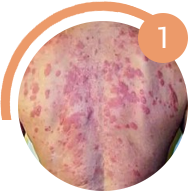
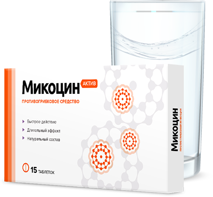

13 000+ довольных клиентов за 2018 год
13 000+ довольных клиентов за 2018 годКомплексное избавление от грибка - изнутри и снаружи
2 в 1
Комплекс Микоцин устраняет зуд, неприятный запах и возвращает эстетичный вид
1
Таблетки Микоцин уничтожают все виды грибка на ногтях и коже
2
Гель Микоцин восстанавливает кожу и создает на ней защитный барьер
Успейте заказать со скидкой до 10.09.2018
старая цена
918₽
новая цена
459₽
Осталось 10 упаковок со скидкой
Ваши данные защищены!
 Бесплатно
БесплатноГрибок - это опасная инфекция
которая угрожает вам и вашим близким, ведь с каждым днем грибок приводит к:

Cложным формам аллергии
Может появится сильная реакция на не привычную пищу, одежду, средства гигиены

Потере ногтя и ампутации пальца
После полного разрушения ногтя грибок распространяется на палец, что приводит к его ампутации

Тяжелому поражению внутренних органов
Может привести к повреждениям мозга, слепоте, отказу печени, почек и сердца
Статистика: каждые 60 секунд врачи деагностируют опасные поражения внутренних органов, вызванные грибком, у 1-го пациент
Почему большинство средств против грибка малоэффективны

Чудо-средства
Обещают, что избавят от грибка меньше, чем за месяц, хотя это невозможно
Но
Ноготь - это роговой слой кожи. Он не имеет живых клеток. Часть ногтя, которая уже поражена грибком, не может выздороветь до полного его отрастания. Единственный способ вылечить грибок - подавлять его распространение все время, пока ноготь не отрастет заново. Для этого требуется 4-6 месяцев.
Наружные средства
Способны устранить внешние проявления грибка. (кремы, лаки, пластыри)
Но
Очаг заражения находится под ногтевой пластиной, а наружніе средства не способні его достичь - они действуют только на верхнем слое ногтя, поэтому не способны избавить от грибка. Для повышения их эффективности рекомендуется спиливать ноготь полностью, но это больно, некрасиво и совершенно не дает гарантий выздоровления.
Внутренние средства
Убивают грибковую инфекцию в организме. (таблетки, саше, капли)
Но
Могут подействовать только при длительном изпользовании (6 - 8 месяцев). За это время внутренние средства в 93% случаев наносят серьезный ущерб печени, вызывают сыпь, отеки, диарею, рвоту. Ктому же, каждое средство эффективно только против одной группы грибка из 4000 видов.
Даже если вы используете наружные и внутренние средства одновременно, это не гарантирует избавления от грибка: они могут конфликтовать между собой по составу и блокировать действие друг друга или быть неэффективным против вашего типа грибка
Вывод:
Почему таблетки Микоцин от грибка так эффективны
Другие средства не дают полную защиту от грибковых инфекций и могут быть опасны
Кремы и мази
Не лечат грибок, потому что не проникают в ногтевую пластину. Только временно избавляют от симптомов инфекций. Могут вызвать сильную аллергию и раздражения на коже.
Народные методы
Помогают только в редких случаях. Могут причинить вред коже и ногтям. Не предотвращают повторные заражения грибком.
Таблетки
Действуют против всех видов грибков. Быстро снимают неприятные симптомы и уничтожают инфекцию изнутри вне зависимости от области заражения грибком. Надолго защищают от повторных заражений.
Зачем лечить сложнее, дольше и дороже, если есть Микоцин?
Как применять Микоцин?

Принимать по одной таблетке утром и вечером
Запивать стаканом воды
Курс - от 30 дней